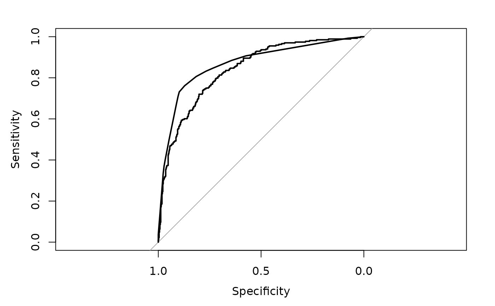

Build a ROC curve
ROC.RdThis is a wrapper to the main function pROC of the pROC package (by Xavier Robin et al.). It builds a ROC curve and returns a "roc" object, a list of class "roc".
Details
Partial ROC is calculated following Peterson et al. (2008; doi:10.1016/j.ecolmodel.2007.11.008 ). This function is a modification of the PartialROC funcion, available at https://github.com/narayanibarve/ENMGadgets.
References
Peterson, A.T. et al. (2008) Rethinking receiver operating characteristic analysis applications in ecological niche modeling. Ecol. Modell., 213, 63-72.
Examples
r.glm <- FitMod(diabetes ~ ., data = d.pima, fitfn="logit")
ROC(r.glm)
#> Setting levels: control = neg, case = pos
#> Setting direction: controls < cases
#>
#> Call:
#> roc.default(response = Response(x), predictor = predict(x, type = "prob")[, 2], plot = FALSE)
#>
#> Data: predict(x, type = "prob")[, 2] in 500 controls (Response(x) neg) < 268 cases (Response(x) pos).
#> Area under the curve: 0.8394
# plot ROC curves for a list of models
r.rp <- FitMod(diabetes ~ ., data = d.pima, fitfn="rpart")
# combine models to a list
mlst <- list(r.glm, r.rp)
# do the plot
for(i in seq_along(mlst))
if(i==1){
plot(ROC(mlst[[i]], grid=TRUE, col=c(hred, hblue)[i]))
} else {
lines(ROC(mlst[[i]], col=c(hred, hblue)[i]))
}
#> Setting levels: control = neg, case = pos
#> Setting direction: controls < cases
#> Setting levels: control = neg, case = pos
#> Setting direction: controls < cases
